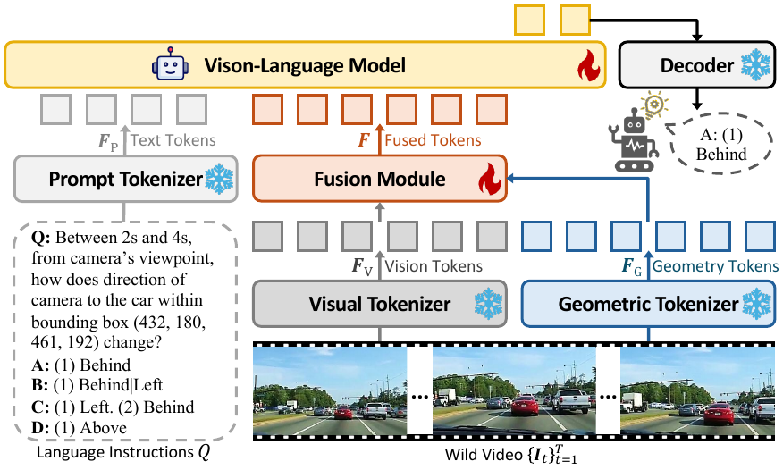
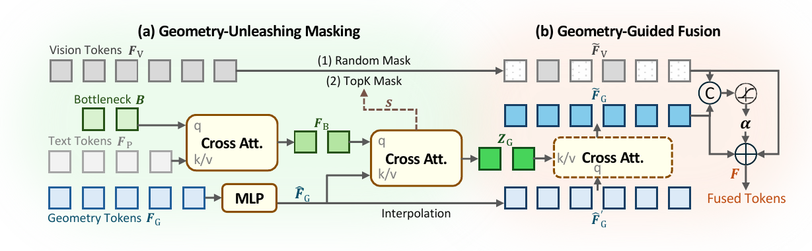

Abstract
Empowered by large-scale training, vision-language models (VLMs) achieve strong image and video understanding, yet their ability to perform spatial reasoning in both static scenes and dynamic videos remains limited. Recent advances try to handle this limitation by injecting geometry tokens from pretrained 3D foundation models into VLMs. Nevertheless, we observe that naive token fusion followed by standard fine-tuning in this line of work often leaves such geometric cues underutilized for spatial reasoning, as VLMs tend to rely heavily on 2D visual cues. In this paper, we propose GeoSR, a framework designed to make geometry matter by encouraging VLMs to actively reason with geometry tokens. GeoSR introduces two key components: (1) Geometry-Unleashing Masking, which strategically masks portions of 2D vision tokens during training to weaken non-geometric shortcuts and force the model to consult geometry tokens for spatial reasoning; and (2) Geometry-Guided Fusion, a gated routing mechanism that adaptively amplifies geometry token contributions in regions where geometric evidence is critical. Together, these designs unleash the potential of geometry tokens for spatial reasoning tasks. Extensive experiments on both static and dynamic spatial reasoning benchmarks demonstrate that GeoSR consistently outperforms prior methods and establishes new state-of-the-art performance by effectively leveraging geometric information.
Method
GeoSR builds on the standard geometry-aware VLM pipeline with two targeted components: one applied during training and one during fusion.
Baseline Framework
A pretrained geometry tokenizer extracts geometry tokens that are fused with standard vision tokens before the VLM answers the query. GeoSR does not replace this pipeline, it makes the geometry stream matter more during reasoning.

Effective Geometry Usage
GeoSR masks a subset of 2D visual tokens during training. For static reasoning, masking is random. For dynamic reasoning, it is driven by question-relevant geometry attention. This weakens appearance shortcuts and forces the model to consult geometry.
Reasonable Geometry Usage
A learned token- and channel-wise gate mixes masked visual features with geometry features. Instead of uniformly injecting geometry, GeoSR amplifies it only where geometric evidence is actually needed.

Results
GeoSR improves over geometry-aware baselines on rigid scenes with viewpoint changes and on dynamic scenes with evolving spatial relations.
Static Spatial Reasoning
GeoSR achieves the best overall average score of 51.9, improving the strongest geometry-aware baseline VG-LLM by +1.2.
| Model | Avg. |
|---|---|
| Qwen2.5-VL-7B | 33.0 |
| Spatial-MLLM | 48.4 |
| VG-LLM | 50.7 |
| GeoSR | 51.9 |
0.41s
Inference time
9.23B
Model size
18.95GB
Peak memory
γ = 0.8
Best masking ratio
Qualitative Results
GeoSR improves qualitative results on both benchmarks, while we also highlight cases where the benchmark itself remains ambiguous.
We highlight benchmark questions that remain ambiguous from the visual evidence itself, which may limit annotation quality and evaluation reliability.
Case 1. Speed comparison can remain ambiguous when two entities move at visually similar speeds.
Case 2. Occlusion can make relative spatial relations difficult to judge, even when the benchmark expects a single answer.
@misc{zhang2026geosr,
title = {Make Geometry Matter for Spatial Reasoning},
author = {Shihua Zhang and Qiuhong Shen and Shizun Wang and Tianbo Pan and Xinchao Wang},
year = {2026},
note = {Project page and manuscript draft}
}Ready to copy.